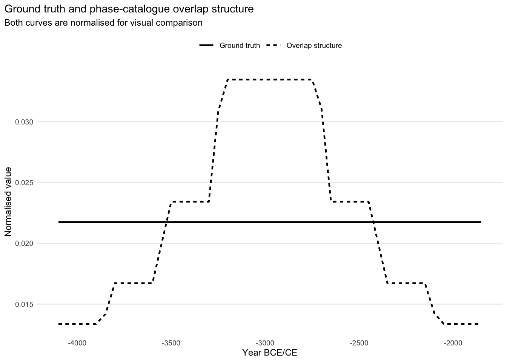
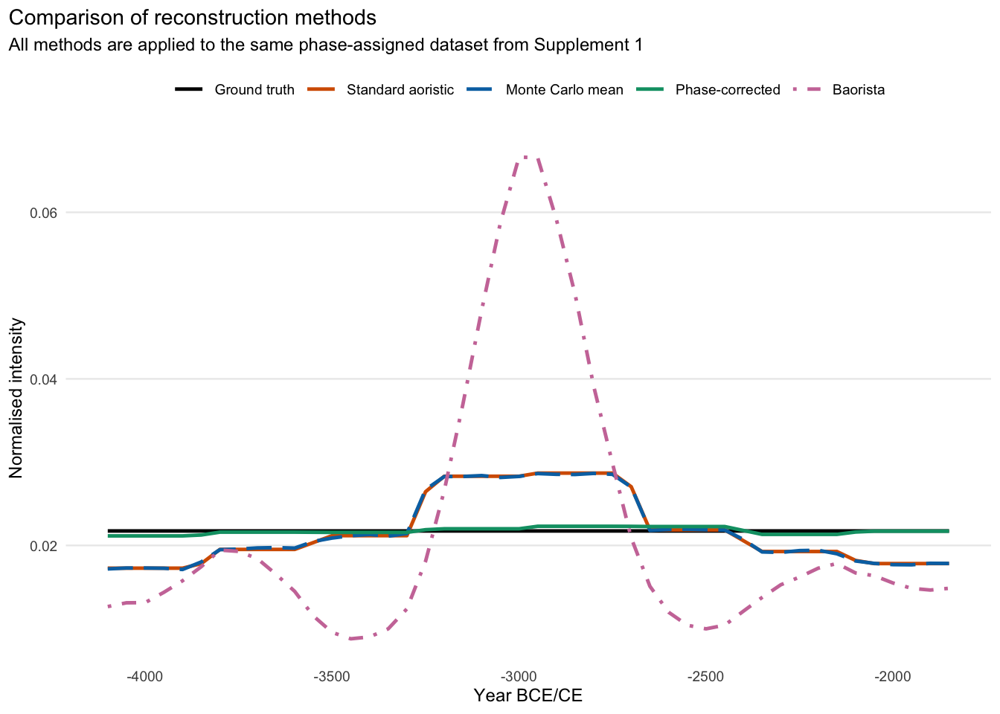
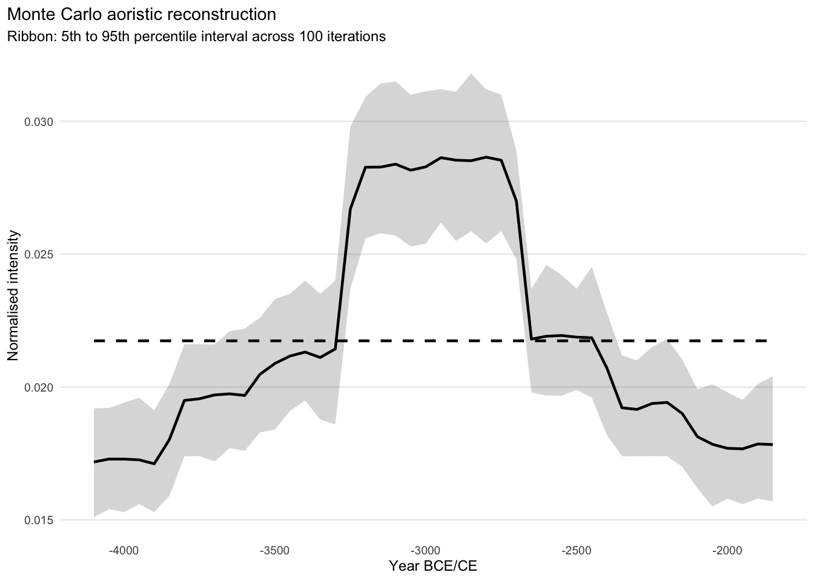
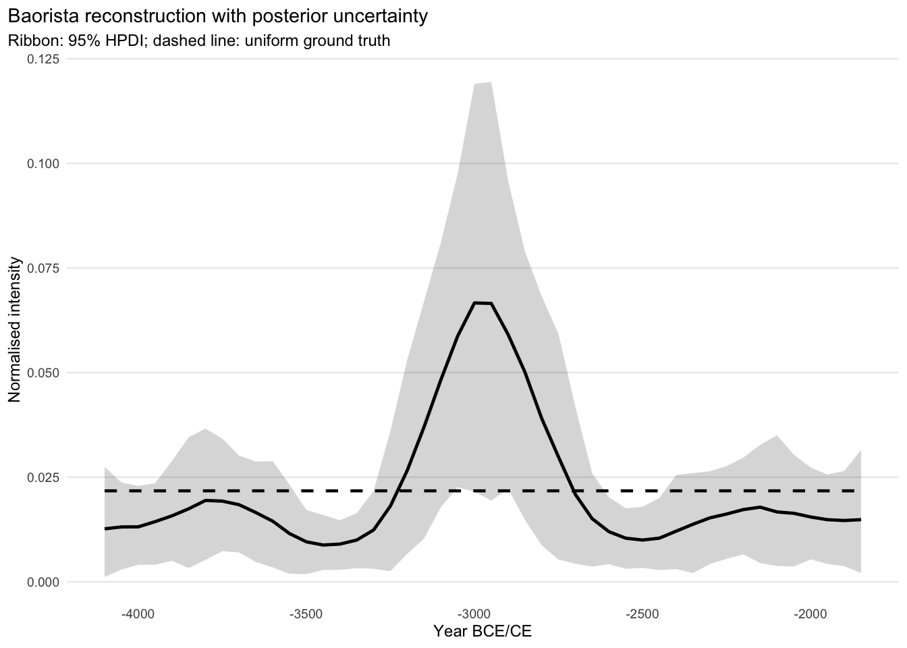
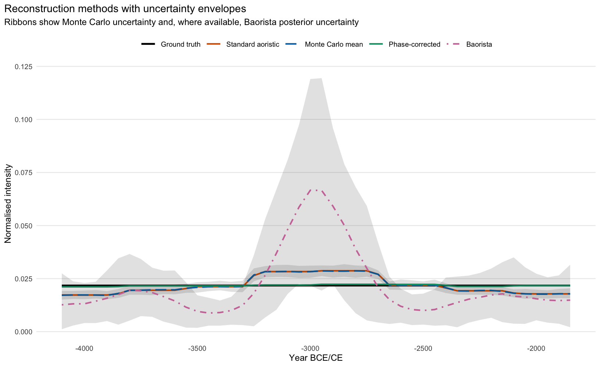
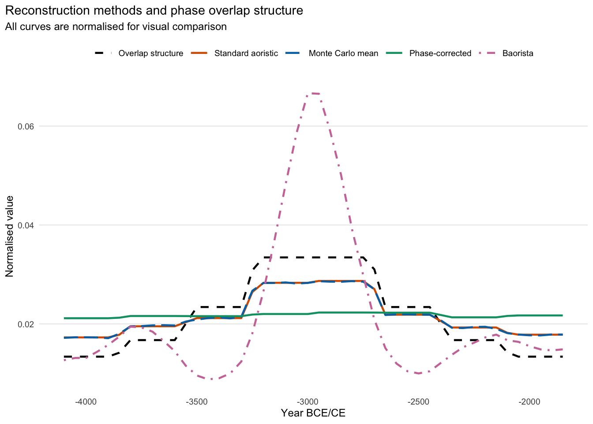
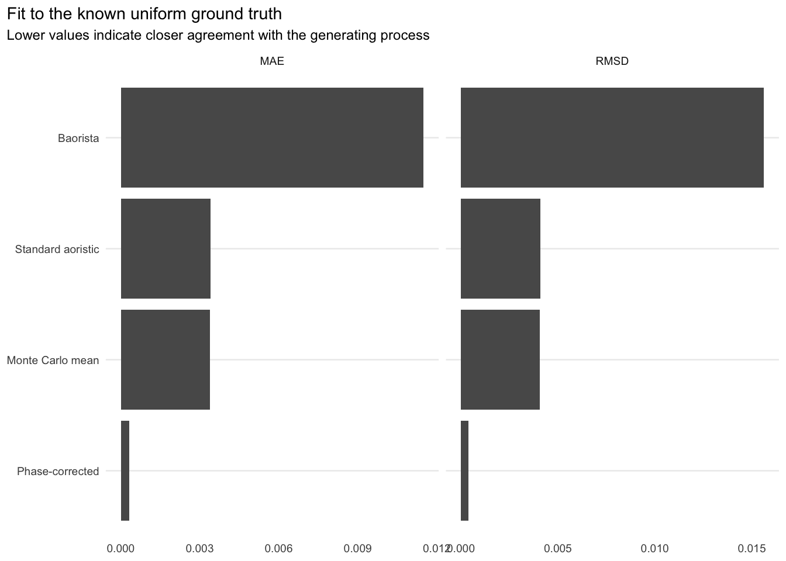
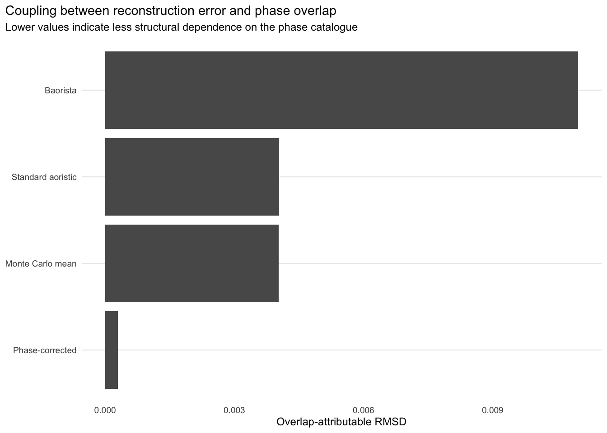
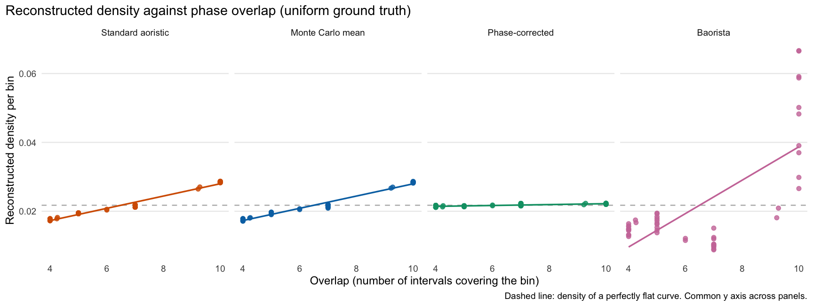
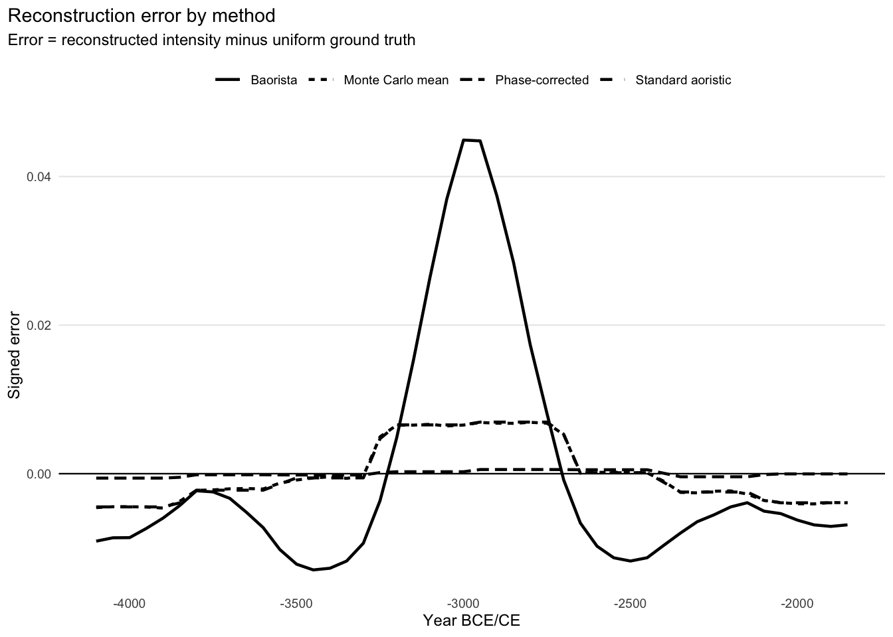

Code
library(dplyr)
library(tidyr)
library(ggplot2)
library(purrr)
library(tibble)
library(readr)
library(rlang)Supplement 1 showed that a standard proportional aoristic reconstruction produces temporal structure that closely follows the overlap structure of the phase catalogue, although the underlying event process is uniform. Here we apply alternative reconstruction methods to the same observations.
Specifically, we use:
We compare three central reconstruction approaches:
We also show the performance of Baorista (Crema, 2025). It serves as an external, model-based benchmark with a full representation of posterior uncertainty.
The central question of this supplement is:
Which reconstruction method is closer to the uniform generating process, and which remains more coupled to the overlap structure of the phase catalogue?
The Baorista fit is computed with scripts/run_s2_baorista.R (make refresh-s2-baorista), its prior sensitivity with scripts/run_s2_baorista_sensitivity.sh (make refresh-s2-baorista-sensitivity), and this document reads their results from outputs/. All other results are computed here. The full reproduction workflow is described in the README.
Some standard packages for data preprocessing.
library(dplyr)
library(tidyr)
library(ggplot2)
library(purrr)
library(tibble)
library(readr)
library(rlang)The parameters set below are the number of Monte Carlo iterations, the temporal frame, the bin width and the temporal grid.
set.seed(42)
dir.create("outputs", showWarnings = FALSE, recursive = TRUE)
dir.create("figures", showWarnings = FALSE, recursive = TRUE)
source("R/aoristic_helpers.R")
time_min <- -4100
time_max <- -1800
year_grid <- seq(time_min, time_max - 1, by = 1)
bin_width <- 50
n_mc <- 100LWe use the phase catalogue, the assigned events, the ground truth and the overlap curve from Supplement 1.
required_files <- c("outputs/s1_synthetic_phase_catalogue.csv",
"outputs/s1_assigned_events.csv",
"outputs/s1_ground_truth_binned.csv",
"outputs/s1_overlap_curve_binned.csv")
if (!all(file.exists(required_files))) stop("Render Supplement 1 first.")phase_catalogue <- read_csv("outputs/s1_synthetic_phase_catalogue.csv",
show_col_types = FALSE)
assigned_events <- read_csv("outputs/s1_assigned_events.csv",
show_col_types = FALSE)
true_curve_binned <- read_csv("outputs/s1_ground_truth_binned.csv",
show_col_types = FALSE)
overlap_curve_binned <- read_csv("outputs/s1_overlap_curve_binned.csv",
show_col_types = FALSE)
assigned_events <- assigned_events |>
mutate(start = as.integer(start), end = as.integer(end))Differences between the curves thus result only from the reconstruction methods.
As in Supplement 1, the true generating process is uniform (it is in fact identical). Any deviation from a flat reconstruction comes from the observation and reconstruction procedure.
truth_overlap <- true_curve_binned |>
left_join(overlap_curve_binned, by = "year") |>
mutate(true = normalise_curve(true))p_truth_overlap <- truth_overlap |>
mutate(overlap_scaled = normalise_curve(overlap)) |>
select(year, Ground_truth = true, Overlap_structure = overlap_scaled) |>
pivot_longer(cols = -year, names_to = "curve", values_to = "value") |>
mutate(
curve = recode(curve, Ground_truth = "Ground truth",
Overlap_structure = "Overlap structure")
) |>
ggplot(aes(x = year, y = value, linetype = curve)) +
geom_line(linewidth = 0.8) +
labs(title = "Ground truth and phase-catalogue overlap structure",
subtitle = "Both curves are normalised for visual comparison",
x = "Year BCE/CE", y = "Normalised value") +
plot_theme()
p_truth_overlap
As in Supplement 1, the overlap curve reflects the catalogue, not the event process.
From this, we derive two criteria for a good reconstruction:
The two criteria can diverge, since a method can be close to the ground truth overall and still follow the phase structure in parts of the sequence. We therefore also measure the coupling between reconstruction error and overlap structure.
The standard aoristic method distributes each observation uniformly over the full length of its assigned interval.
standard_curve <- run_standard_aoristic(intervals = assigned_events,
year_grid = year_grid)
standard_curve_binned <- standard_curve |>
make_reconstruction_binned(value_col = standard, output_col = "standard",
bin_width = bin_width, bin_start = time_min)The method used here is the classical proportional aoristic approach. It assumes a uniform probability of events within each observed interval. Locally, this assumption is plausible if no further information is available within an individual dating interval. A problem arises, however, if such intervals originate from an overlapping hierarchical phase catalogue. As shown in Supplement 1, the combination of proportional distribution and label assignment can lead the reconstructed curve to inherit structure from the phase catalogue.
The phase-corrected aoristic reconstruction modifies weights within the observed intervals based on the number of overlapping labels.
Years that are covered by multiple phase labels receive reduced weight within the assigned interval. The contribution of each observation is then renormalised so that it retains a total weight of 1.
phase_corrected_curve <- run_phase_corrected_aoristic(
intervals = assigned_events, year_grid = year_grid
)
phase_corrected_curve_binned <- phase_corrected_curve |>
make_reconstruction_binned(value_col = phase_corrected,
output_col = "phase_corrected",
bin_width = bin_width, bin_start = time_min)If the standard curve rises where more labels overlap, the correction should dampen this effect.
The weighting has a probabilistic basis. If an event dated to \(t\) is attributed with equal probability to any of the \(\lambda(t)\) labels covering \(t\), the phase-corrected weights are the posterior distribution of the event date under a flat prior (main text, Section 2.3, and Supplement 6). The standard reconstruction, by contrast, implicitly assumes that the probability of a label does not depend on how many alternative labels exist at \(t\), an assumption that is hard to justify for hierarchical catalogues. The correction requires no information beyond the observed intervals. It does not model preservation, recovery or research intensity, and its behaviour under non-uniform signals and other assignment models is examined in Supplements 3 and 6.
The Monte Carlo aoristic reconstruction repeatedly draws, for each observation, a possible year from the assigned time interval. After many repetitions, this yields a mean reconstruction curve and an uncertainty range.
mc_curve_binned <- run_monte_carlo_aoristic(
intervals = assigned_events,
year_grid = year_grid,
bin_width = bin_width,
bin_start = time_min,
n_iter = n_mc,
seed = 42001
)In this simulation, each year within an interval is treated equally. The Monte Carlo reconstruction rests on the same within-interval uniformity assumption as the standard proportional aoristic approach.
Its expected value is therefore that of the standard reconstruction, and what it adds is a picture of how strongly the curve varies if the true dates are random within the intervals.
In addition to the three aoristic reconstruction approaches, we include the Baorista reconstruction as a model-based comparison.
Baorista instead fits a model to the intervals. It estimates the probability of events per 50-year block under an intrinsic conditional autoregressive (ICAR) prior. As in the main text (Section 3.2), we use an exponential prior with rate 1 on the ICAR scale parameter. Its posterior uncertainty refers to this model, whereas the Monte Carlo range refers to random placement within the intervals.
Both the central reconstruction curve and the posterior credible intervals of the binned Baorista result are included in the following comparison.
baorista_curve_binned <- read_csv("outputs/s2_baorista_curve_binned.csv",
show_col_types = FALSE) |>
mutate(baorista = normalise_curve(baorista)) |>
arrange(year)
# rescale the posterior summaries with the point estimate
baorista_total <- sum(baorista_curve_binned$baorista, na.rm = TRUE)
baorista_curve_binned <- baorista_curve_binned |>
mutate(across(starts_with("baorista"), ~ .x / baorista_total))The model is fitted by MCMC in NIMBLE (de Valpine et al., 2017) with four chains. Convergence is assessed with the Gelman–Rubin statistic \(\hat R\) (Gelman and Rubin, 1992) for all block probabilities. A fit is accepted if the largest \(\hat R\) does not exceed the criterion given below. If it does, the model is refitted with twice the number of iterations (up to three attempts in total). The effective sample size (ESS) indicates how many independent draws the retained posterior sample corresponds to.
s2_baorista_diagnostics_file <- "outputs/s2_baorista_diagnostics.csv"
s2_diagnostic_labels <- c(max_rhat = "Maximum R-hat",
median_rhat = "Median R-hat", min_ess = "Minimum ESS",
median_ess = "Median ESS",
n_posterior_samples = "Posterior draws",
niter = "Iterations", nburnin = "Burn-in",
thin = "Thinning", nchains = "Chains",
rhat_criterion = "R-hat criterion",
n_attempts = "Attempts", converged = "Converged")
read_csv(s2_baorista_diagnostics_file, show_col_types = FALSE) |>
filter(diagnostic %in% names(s2_diagnostic_labels)) |>
mutate(
value = if_else(
diagnostic == "converged",
if_else(as.numeric(value) == 1, "yes", "no"),
format(round(as.numeric(value), 3), scientific = FALSE, drop0trailing = TRUE, trim = TRUE)
),
diagnostic = factor(unname(s2_diagnostic_labels[diagnostic]),
levels = unname(s2_diagnostic_labels))
) |>
arrange(diagnostic) |>
select(diagnostic, value) |>
kbl(
col.names = c("Diagnostic", "Value"))| Diagnostic | Value |
|---|---|
| Maximum R-hat | 1.008 |
| Median R-hat | 1.002 |
| Minimum ESS | 453.181 |
| Median ESS | 1596.229 |
| Posterior draws | 2000 |
| Iterations | 50000 |
| Burn-in | 25000 |
| Thinning | 50 |
| Chains | 4 |
| R-hat criterion | 1.05 |
| Attempts | 1 |
| Converged | yes |
The individual reconstruction curves are combined here into a common table. All curves are normalised so that they can be compared directly as relative temporal intensities.
curves_binned <- truth_overlap |>
left_join(standard_curve_binned, by = "year") |>
left_join(phase_corrected_curve_binned, by = "year") |>
left_join(
mc_curve_binned |>
select(year, mc_mean, mc_median, mc_q05, mc_q95),
by = "year"
) |>
mutate(standard = normalise_curve(replace_na(standard, 0)),
phase_corrected = normalise_curve(replace_na(phase_corrected, 0)),
mc_mean = normalise_curve(replace_na(mc_mean, 0)),
mc_median = normalise_curve(replace_na(mc_median, 0)))
curves_binned <- curves_binned |>
left_join(baorista_curve_binned, by = "year")
write_csv(curves_binned, "outputs/s2_reconstruction_curves_binned.csv")Because of the normalisation, the individual curves do not represent estimates of absolute counts, and we compare only the shapes of the reconstructed temporal distributions.
plot_methods <- curves_binned |>
select(year, Ground_truth = true, Standard_aoristic = standard,
Phase_corrected = phase_corrected, Monte_Carlo_mean = mc_mean,
any_of("baorista")) |>
pivot_longer(cols = -year, names_to = "method", values_to = "value") |>
mutate(
method = recode(method, Ground_truth = "Ground truth",
Standard_aoristic = "Standard aoristic",
Phase_corrected = "Phase-corrected",
Monte_Carlo_mean = "Monte Carlo mean",
baorista = "Baorista"),
method = factor(
method,
levels = c("Ground truth", "Standard aoristic", "Monte Carlo mean",
"Phase-corrected", "Baorista")
)
)
method_colours <- c("Ground truth" = "black", "Standard aoristic" = "#D55E00",
"Monte Carlo mean" = "#0072B2",
"Phase-corrected" = "#009E73", "Baorista" = "#CC79A7")
method_linetypes <- c("Ground truth" = "solid", "Standard aoristic" = "solid",
"Monte Carlo mean" = "longdash",
"Phase-corrected" = "solid", "Baorista" = "dotdash")
p_methods <- ggplot(
plot_methods,
aes(x = year, y = value, colour = method, linetype = method)
) +
geom_line(linewidth = 0.85, na.rm = TRUE) +
scale_colour_manual(values = method_colours, drop = FALSE) +
scale_linetype_manual(values = method_linetypes, drop = FALSE) +
labs(
title = "Comparison of reconstruction methods",
subtitle = "All methods are applied to the same phase-assigned dataset from Supplement 1",
x = "Year BCE/CE",
y = "Normalised intensity"
) +
plot_theme()
p_methods
The standard and Monte Carlo mean curves are almost identical, as both assume uniformity within the intervals.
The phase-corrected reconstruction (green) differs from both and gives less weight to sections covered by many labels.
Since the truth is uniform, closeness to it can be read directly. The phase-corrected curve comes closest, the standard and Monte Carlo curves show the overlap pattern of Supplement 1, and Baorista deviates markedly in a different way. The uncertainty envelopes of the Monte Carlo and Baorista reconstructions are shown below.
The Monte Carlo uncertainty envelope shows the variability that results if each event is randomly and repeatedly placed within its assigned interval.
p_mc <- ggplot(curves_binned, aes(x = year)) +
geom_ribbon(aes(ymin = mc_q05, ymax = mc_q95), alpha = 0.20, na.rm = TRUE) +
geom_line(aes(y = mc_mean), linewidth = 0.8, na.rm = TRUE) +
geom_line(aes(y = true), linewidth = 0.8, linetype = "dashed", na.rm = TRUE) +
labs(
title = "Monte Carlo aoristic reconstruction",
subtitle = paste0("Ribbon: 5th to 95th percentile interval across ", n_mc, " iterations"),
x = "Year BCE/CE",
y = "Normalised intensity"
) +
plot_theme()
p_mc
The envelope shows how strongly the curve varies with random placement within the intervals. Over large parts of the sequence it does not cover the true value.
For the Baorista reconstruction, we plot the posterior credible interval in addition to the central curve, in the same way as for the Monte Carlo aoristic reconstruction above. We use the 95% highest posterior density interval (HPDI). Quantile intervals of different widths could be used instead. Plotting the central tendency together with the credible interval is essential for Bayesian approaches, as their aim is less to produce correct point estimates than to provide a range of plausible values given the underlying assumptions and the data.
baorista_band_type <- "95% HPDI"
baorista_uncertainty <- curves_binned |>
transmute(year, true, baorista,
lower = pmax(0, pmin(baorista_hpdi95_lower, baorista_hpdi95_upper)),
upper = pmax(0, pmax(baorista_hpdi95_lower, baorista_hpdi95_upper))) |>
filter(is.finite(year), is.finite(baorista), is.finite(lower),
is.finite(upper)) |>
distinct(year, .keep_all = TRUE) |>
arrange(year)p_baorista_uncertainty <- ggplot(baorista_uncertainty, aes(x = year)) +
geom_ribbon(aes(ymin = lower, ymax = upper, group = 1), alpha = 0.20,
na.rm = TRUE) +
geom_line(aes(y = baorista), linewidth = 0.85, na.rm = TRUE) +
geom_line(aes(y = true), linewidth = 0.8, linetype = "dashed",
na.rm = TRUE) +
labs(
title = "Baorista reconstruction with posterior uncertainty",
subtitle = paste0("Ribbon: ", baorista_band_type, "; dashed line: uniform ground truth"),
x = "Year BCE/CE",
y = "Normalised intensity"
) +
plot_theme()
p_baorista_uncertainty
In the uniform scenario, the Baorista curve deviates substantially from the ground truth.
The main curves together with the envelopes of the two simulation-based methods:
The Monte Carlo ribbon reflects the variability of repeated random allocations within the assigned intervals. The Baorista ribbon reflects the posterior uncertainty of the fitted model.
p_methods_uncertainty <- ggplot(curves_binned, aes(x = year)) +
geom_ribbon(aes(ymin = mc_q05, ymax = mc_q95), alpha = 0.14, na.rm = TRUE) +
geom_line(aes(y = true, colour = "Ground truth", linetype = "Ground truth"),
linewidth = 0.9, na.rm = TRUE) +
geom_line(
aes(y = standard, colour = "Standard aoristic", linetype = "Standard aoristic"),
linewidth = 0.75,
na.rm = TRUE
) +
geom_line(
aes(y = mc_mean, colour = "Monte Carlo mean", linetype = "Monte Carlo mean"),
linewidth = 0.75,
na.rm = TRUE
) +
geom_line(
aes(y = phase_corrected, colour = "Phase-corrected", linetype = "Phase-corrected"),
linewidth = 0.75,
na.rm = TRUE
)
p_methods_uncertainty <- p_methods_uncertainty +
geom_ribbon(data = baorista_uncertainty,
aes(x = year, ymin = lower, ymax = upper, group = 1),
inherit.aes = FALSE, alpha = 0.14, na.rm = TRUE)
p_methods_uncertainty <- p_methods_uncertainty +
geom_line(aes(y = baorista, colour = "Baorista", linetype = "Baorista"),
linewidth = 0.75, na.rm = TRUE)
p_methods_uncertainty <- p_methods_uncertainty +
scale_colour_manual(name = NULL, values = method_colours,
breaks = names(method_colours)) +
scale_linetype_manual(name = NULL, values = method_linetypes,
breaks = names(method_colours)) +
labs(
title = "Reconstruction methods with uncertainty envelopes",
subtitle = "Ribbons show Monte Carlo uncertainty and, where available, Baorista posterior uncertainty",
x = "Year BCE/CE",
y = "Normalised intensity"
) +
plot_theme()
p_methods_uncertainty
ggsave("figures/s2_reconstruction_methods_with_uncertainty.png",
p_methods_uncertainty, width = 8.5, height = 5.2, dpi = 600)As in Supplement 1, we compare the reconstructions with the overlap curve.
plot_overlap_methods <- curves_binned |>
mutate(overlap_scaled = normalise_curve(overlap)) |>
select(year, Overlap_structure = overlap_scaled, Standard_aoristic = standard,
Phase_corrected = phase_corrected, Monte_Carlo_mean = mc_mean,
any_of("baorista")) |>
pivot_longer(cols = -year, names_to = "method", values_to = "value") |>
mutate(
method = recode(method, Overlap_structure = "Overlap structure",
Standard_aoristic = "Standard aoristic",
Phase_corrected = "Phase-corrected",
Monte_Carlo_mean = "Monte Carlo mean",
baorista = "Baorista"),
method = factor(
method,
levels = c("Overlap structure", "Standard aoristic", "Monte Carlo mean",
"Phase-corrected", "Baorista")
)
)
overlap_colours <- c("Overlap structure" = "black",
"Standard aoristic" = "#D55E00",
"Monte Carlo mean" = "#0072B2",
"Phase-corrected" = "#009E73", "Baorista" = "#CC79A7")
overlap_linetypes <- c("Overlap structure" = "dashed",
"Standard aoristic" = "solid",
"Monte Carlo mean" = "longdash",
"Phase-corrected" = "solid", "Baorista" = "dotdash")
p_overlap_methods <- ggplot(
plot_overlap_methods,
aes(x = year, y = value, colour = method, linetype = method)
) +
geom_line(linewidth = 0.8, na.rm = TRUE) +
scale_colour_manual(values = overlap_colours, drop = FALSE) +
scale_linetype_manual(values = overlap_linetypes, drop = FALSE) +
labs(title = "Reconstruction methods and phase overlap structure",
subtitle = "All curves are normalised for visual comparison",
x = "Year BCE/CE", y = "Normalised value") +
plot_theme()
p_overlap_methods
The standard aoristic and Monte Carlo mean curves remain strongly coupled to the overlap pattern. as expected from their shared proportional allocation.
The phase-corrected reconstruction reduces this coupling substantially. Baorista follows the overlap curve less closely than the standard reconstruction, but still visibly. Its overlap-aligned component is nevertheless larger (see below).
ggsave("figures/s2_methods_vs_overlap_structure.png", p_overlap_methods,
width = 8.5, height = 5.2, dpi = 600)Because this is a simulation, the true generating curve is known. Each method can be compared quantitatively with the uniform ground truth.
metric_input <- curves_binned |>
select(year, true, overlap, standard, phase_corrected, mc_mean,
any_of("baorista"))
fit_metrics <- compute_curve_metrics(curves = metric_input,
truth_col = "true") |>
mutate(
method = recode(method, standard = "Standard aoristic",
phase_corrected = "Phase-corrected",
mc_mean = "Monte Carlo mean", baorista = "Baorista")
) |>
arrange(rmsd)
write_csv(fit_metrics, "outputs/s2_fit_metrics.csv")
format_sig3 <- function(x) {
vapply(
x,
function(v) {
if (is.na(v)) {
NA_character_
} else {
format(signif(v, 3), scientific = FALSE, drop0trailing = TRUE, trim = TRUE)
}
},
character(1)
)
}
fit_metrics |>
select(method, rmsd, mae) |>
mutate(across(c(rmsd, mae), format_sig3)) |>
kbl(col.names = c("Method", "RMSD", "MAE"), align = c("l", "r", "r"))| Method | RMSD | MAE |
|---|---|---|
| Phase-corrected | 0.000384 | 0.000327 |
| Monte Carlo mean | 0.00408 | 0.00338 |
| Standard aoristic | 0.0041 | 0.0034 |
| Baorista | 0.0156 | 0.0115 |
RMSD and MAE are given as absolute densities of curves normalised to sum to one over the 46 bins of 50 years. Multiplied by 46 (and by 100), they correspond to the percentage of the mean bin density used in the manuscript. The phase-corrected reconstruction fits best by a wide margin, while the Monte Carlo mean and the standard reconstruction are close together, and Baorista deviates most.
This is expected. Under the assignment rule used in the simulation, the phase correction is in expectation the exact flat-prior posterior, so that its remaining error reflects sampling noise. Non-uniform signals and other assignment models are examined in Supplements 3 and 6.
p_fit <- fit_metrics |>
pivot_longer(cols = c(rmsd, mae), names_to = "metric", values_to = "value") |>
mutate(metric = recode(metric, rmsd = "RMSD", mae = "MAE"),
method = reorder(method, value)) |>
ggplot(aes(x = value, y = method)) +
geom_col() +
facet_wrap(~ metric, scales = "free_x") +
labs(
title = "Fit to the known uniform ground truth",
subtitle = "Lower values indicate closer agreement with the generating process",
x = NULL,
y = NULL
) +
plot_theme()
p_fit
ggsave("figures/s2_fit_metrics.png", p_fit, width = 8.5, height = 4.8,
dpi = 600)We also measure how strongly the reconstruction error is still connected to the overlap structure.
overlap_diagnostics <- compute_overlap_diagnostics(
curves = metric_input, truth_col = "true", overlap_col = "overlap"
) |>
mutate(
method = recode(method, standard = "Standard aoristic",
phase_corrected = "Phase-corrected",
mc_mean = "Monte Carlo mean", baorista = "Baorista")
) |>
arrange(overlap_attributable_rmsd)
write_csv(overlap_diagnostics, "outputs/s2_overlap_diagnostics.csv")
overlap_diagnostics |>
select(method, overlap_curve_correlation, overlap_abs_error_correlation,
overlap_squared_error_correlation) |>
kbl(
digits = 3,
col.names = c("Method", "Correlation with overlap",
"Overlap vs. absolute error", "Overlap vs. squared error")
)| Method | Correlation with overlap | Overlap vs. absolute error | Overlap vs. squared error |
|---|---|---|---|
| Phase-corrected | 0.765 | 0.223 | 0.142 |
| Monte Carlo mean | 0.987 | 0.446 | 0.646 |
| Standard aoristic | 0.987 | 0.453 | 0.653 |
| Baorista | 0.703 | 0.643 | 0.596 |
p_overlap_bias <- overlap_diagnostics |>
mutate(method = reorder(method, overlap_attributable_rmsd)) |>
ggplot(aes(x = overlap_attributable_rmsd, y = method)) +
geom_col() +
labs(
title = "Coupling between reconstruction error and phase overlap",
subtitle = "Lower values indicate less structural dependence on the phase catalogue",
x = "Overlap-attributable RMSD",
y = NULL
) +
plot_theme()
p_overlap_bias
Correlations measure whether a reconstruction or its error has the shape of the overlap curve, not how strongly it follows it. A nearly flat curve with a small ripple shaped like the overlap curve can still correlate highly with it. We therefore add two magnitude-based measures:
Under the uniform ground truth, \(G\) is constant, so the correlation of the error with the overlap curve is identical to the correlation of the reconstruction with it. Only one of the two is therefore shown in the table above. Because all curves are normalised to the same total, the mean error is zero and \(\mathrm{sd}(E)\) equals the RMSD, and the share of the RMSD attributable to the overlap structure equals the absolute correlation \(|\mathrm{cor}(E, \lambda)|\) in the table below.
overlap_strength <- overlap_diagnostics |>
select(method, overlap_curve_correlation, overlap_attributable_rmsd,
overlap_attributable_share, overlap_relative_amplitude) |>
left_join(fit_metrics |> select(method, rmsd), by = "method") |>
relocate(rmsd, .after = method) |>
arrange(overlap_attributable_rmsd)
kbl(
overlap_strength |>
mutate(across(where(is.numeric), format_sig3)),
align = c("l", rep("r", 5)),
col.names = c("Method", "RMSD", "Cor. with overlap", "Ovl. RMSD",
"Ovl. share of RMSD", "Ampl."))
os_val <- function(m, col) overlap_strength[[col]][overlap_strength$method == m]| Method | RMSD | Cor. with overlap | Ovl. RMSD | Ovl. share of RMSD | Ampl. |
|---|---|---|---|---|---|
| Phase-corrected | 0.000384 | 0.765 | 0.000294 | 0.765 | 0.0135 |
| Monte Carlo mean | 0.00408 | 0.987 | 0.00403 | 0.987 | 0.185 |
| Standard aoristic | 0.0041 | 0.987 | 0.00404 | 0.987 | 0.186 |
| Baorista | 0.0156 | 0.703 | 0.011 | 0.703 | 0.505 |
The magnitude-based measures change the picture given by the correlations. The correlation of the phase-corrected reconstruction with the overlap curve is still 0.765, but the part of its error that follows the overlap structure amounts to only 0.00029, compared with 0.004 for the standard reconstruction, roughly 14 times less. The correction leaves a trace of the overlap shape but removes almost all of its magnitude.
Baorista shows the reverse case. Its correlation with the overlap curve (0.703) is lower than that of the standard reconstruction, yet its overlap-aligned relative amplitude (0.505) is higher than that of the standard reconstruction (0.186): a lower correlation does not mean that a curve follows the overlap structure less strongly.
scatter_methods <- intersect(c("standard", "mc_mean", "phase_corrected", "baorista"), names(metric_input))
scatter_labels <- c(standard = "Standard aoristic",
mc_mean = "Monte Carlo mean",
phase_corrected = "Phase-corrected",
baorista = "Baorista")[scatter_methods]
p_overlap_scatter <- plot_overlap_scatter(
curves = metric_input,
method_cols = scatter_methods,
method_labels = scatter_labels,
colours = method_colours
) +
labs(title = "Reconstructed density against phase overlap (uniform ground truth)")
p_overlap_scatter
error_curves <- metric_input |>
mutate(standard_error = standard - true,
phase_corrected_error = phase_corrected - true,
mc_mean_error = mc_mean - true)
if ("baorista" %in% names(metric_input)) {
error_curves <- error_curves |>
mutate(baorista_error = baorista - true)
}
plot_errors <- error_curves |>
select(year, Standard_aoristic = standard_error,
Phase_corrected = phase_corrected_error,
Monte_Carlo_mean = mc_mean_error, any_of("baorista_error")) |>
pivot_longer(cols = -year, names_to = "method", values_to = "error") |>
mutate(
method = recode(method, Standard_aoristic = "Standard aoristic",
Phase_corrected = "Phase-corrected",
Monte_Carlo_mean = "Monte Carlo mean",
baorista_error = "Baorista")
)
p_errors <- ggplot(plot_errors, aes(x = year, y = error, linetype = method)) +
geom_hline(yintercept = 0, linewidth = 0.4) +
geom_line(linewidth = 0.8, na.rm = TRUE) +
labs(title = "Reconstruction error by method",
subtitle = "Error = reconstructed intensity minus uniform ground truth",
x = "Year BCE/CE", y = "Signed error") +
plot_theme()
p_errors
The prior on the ICAR scale parameter \(\sigma\) sets the precision \(\tau = 1/\sigma^2\) of the smoothing prior, and there is no general default for it. Supplements 4 and 5 test its influence on the empirical data. Here the true curve is known, so the same test shows whether the peak in the region of high overlap depends on this choice. The model is refitted with the same rates as there (10, 50 and 100) and additionally with a rate of 1000, which enforces a very smooth curve. All other settings are unchanged.
s2_prior_rates <- c(1, 10, 50, 100, 1000)
s2_prior_tag <- function(rate) if (rate == 1) "" else paste0("_rate_", rate)
s2_prior_curves <- purrr::map_dfr(s2_prior_rates, function(rate) {
read_csv(paste0("outputs/s2_baorista", s2_prior_tag(rate), "_curve_binned.csv"),
show_col_types = FALSE) |>
transmute(year, rate = rate, value = normalise_curve(baorista))
}) |>
left_join(curves_binned |> select(year, true, overlap), by = "year")
s2_prior_rhat <- purrr::map_dbl(s2_prior_rates, function(rate) {
read_csv(paste0("outputs/s2_baorista", s2_prior_tag(rate), "_diagnostics.csv"),
show_col_types = FALSE) |>
filter(diagnostic == "max_rhat") |>
pull(value) |>
as.numeric()
})
prior_summary <- function(d) {
d |>
summarise(rmsd = 1000 * rmsd(value, true),
cor_overlap = safe_cor(value, overlap),
amplitude = overlap_relative_amplitude(value, overlap),
peak = max(value))
}
s2_prior_table <- s2_prior_curves |>
group_by(rate) |>
group_modify(~ prior_summary(.x)) |>
ungroup() |>
mutate(label = paste0("Baorista, rate ", rate), max_rhat = s2_prior_rhat)
s2_prior_reference <- bind_rows(
curves_binned |> transmute(label = "Standard aoristic", value = normalise_curve(standard), true, overlap),
curves_binned |> transmute(label = "Phase-corrected", value = normalise_curve(phase_corrected), true, overlap)
) |>
group_by(label) |>
group_modify(~ prior_summary(.x)) |>
ungroup() |>
mutate(max_rhat = NA_real_)
bind_rows(s2_prior_table |> select(label, rmsd, cor_overlap, amplitude, peak, max_rhat),
s2_prior_reference |> select(label, rmsd, cor_overlap, amplitude, peak, max_rhat)) |>
mutate(max_rhat = if_else(is.na(max_rhat), "", format(round(max_rhat, 3), nsmall = 3))) |>
kbl(digits = 3,
col.names = c("Reconstruction", "RMSD", "Cor. with overlap", "Ampl.",
"Highest bin", "Max. R-hat"))
s2_pr <- function(rate, col) s2_prior_table[[col]][s2_prior_table$rate == rate]| Reconstruction | RMSD | Cor. with overlap | Ampl. | Highest bin | Max. R-hat |
|---|---|---|---|---|---|
| Baorista, rate 1 | 15.617 | 0.703 | 0.505 | 0.067 | 1.008 |
| Baorista, rate 10 | 15.463 | 0.704 | 0.501 | 0.066 | 1.012 |
| Baorista, rate 50 | 15.199 | 0.711 | 0.497 | 0.065 | 1.007 |
| Baorista, rate 100 | 14.977 | 0.716 | 0.493 | 0.063 | 1.010 |
| Baorista, rate 1000 | 12.701 | 0.784 | 0.458 | 0.056 | 1.010 |
| Phase-corrected | 0.384 | 0.765 | 0.014 | 0.022 | |
| Standard aoristic | 4.097 | 0.987 | 0.186 | 0.029 |
Up to a rate of 100, the prior hardly matters. The highest bin falls only from 0.067 to 0.063, as with 10,000 events the likelihood determines the shape of the curve. Only the strongest smoothing (rate 1000) lowers the peak noticeably. The curve then moves towards the standard reconstruction, with a correlation with the overlap curve of 0.784, and its overlap-aligned amplitude and error remain larger than those of the standard reconstruction.
The comparison confirms Supplement 1. The standard reconstruction inherits the overlap structure of the catalogue, and the Monte Carlo reconstruction shows the uncertainty around the same expectation without changing it.
In the controlled uniform scenario, the correction reduces the reconstruction error by about an order of magnitude. The phase-corrected curve is closest to the known ground truth and, by the magnitude-based measures, shows the weakest structural coupling to the phase catalogue. A faint trace of the overlap shape remains, but almost all of its magnitude is removed.
Baorista deviates more strongly from the uniform truth than the phase-corrected reconstruction. Its correlation with the overlap curve is lower than that of the standard and Monte Carlo reconstructions, but its overlap-attributable RMSD and overlap-aligned amplitude are larger than those of the standard reconstruction. This does not depend on the prior. Stronger smoothing lowers the peak but brings the curve closer to the standard reconstruction.
Supplement 3 extends the comparison to non-uniform signals.
sessionInfo()R version 4.5.3 (2026-03-11)
Platform: aarch64-apple-darwin20
Running under: macOS 27.2.1
Matrix products: default
BLAS: /Library/Frameworks/R.framework/Versions/4.5-arm64/Resources/lib/libRblas.0.dylib
LAPACK: /Library/Frameworks/R.framework/Versions/4.5-arm64/Resources/lib/libRlapack.dylib; LAPACK version 3.12.1
locale:
[1] en_US.UTF-8/en_US.UTF-8/en_US.UTF-8/C/en_US.UTF-8/en_US.UTF-8
time zone: Europe/Berlin
tzcode source: internal
attached base packages:
[1] stats graphics grDevices datasets utils methods base
other attached packages:
[1] rlang_1.3.0 readr_2.1.6 tibble_3.3.1 purrr_1.2.0 ggplot2_4.0.3
[6] tidyr_1.3.1 dplyr_1.2.1
loaded via a namespace (and not attached):
[1] Matrix_1.7-4 bit_4.6.0 gtable_0.3.6 jsonlite_2.0.0
[5] crayon_1.5.3 compiler_4.5.3 renv_1.2.0 tidyselect_1.2.1
[9] parallel_4.5.3 splines_4.5.3 scales_1.4.0 yaml_2.3.12
[13] fastmap_1.2.0 lattice_0.22-9 R6_2.6.1 labeling_0.4.3
[17] generics_0.1.4 knitr_1.50 rbibutils_2.4.1 pillar_1.11.1
[21] RColorBrewer_1.1-3 tzdb_0.5.0 xfun_0.54 S7_0.2.2
[25] bit64_4.6.0-1 cli_3.6.6 mgcv_1.9-4 withr_3.0.3
[29] magrittr_2.0.5 Rdpack_2.6.6 digest_0.6.39 grid_4.5.3
[33] vroom_1.6.7 hms_1.1.4 nlme_3.1-168 lifecycle_1.0.5
[37] aoristAAR_0.1.1 vctrs_0.7.3 evaluate_1.0.5 glue_1.8.1
[41] farver_2.1.2 rmarkdown_2.30 tools_4.5.3 pkgconfig_2.0.3
[45] htmltools_0.5.9